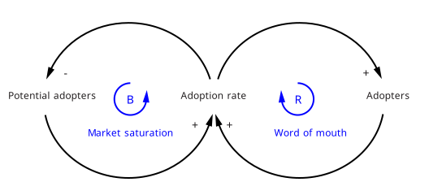
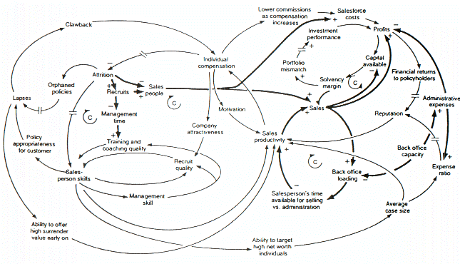
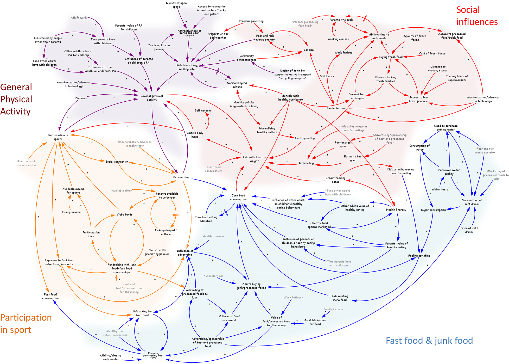
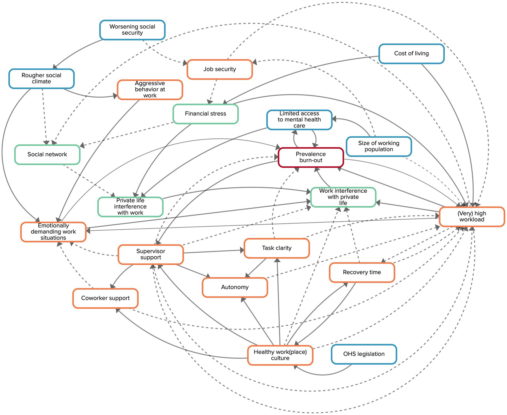
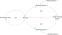

Causal loop map
About
A causal loop diagram, drawn from systems thinking, represents variables connected by arrows labeled with a polarity — positive when two variables move together, negative when they move oppositely — that close into reinforcing and balancing feedback loops. Reading the loops explains why a system behaves the way it does over time: why a problem resists fixing, why a quick solution rebounds, or where a small intervention might cascade into large change. It models structure and relationships rather than sequence, which makes it a tool for understanding persistence and unintended consequences.
When to use
Use a causal loop map for wicked problems, for behavior that unfolds over time, and for anticipating unintended consequences of an intervention — common in strategy, policy, and complex service or organizational design.
When not to use
Avoid it for simple linear cause-and-effect that a short list would capture, and recognize that a causal loop diagram formalizes a mental model of relationships rather than measured data — its quality is only as good as the understanding behind it.
References
Examples
Click any example to view full size and visit the original source.




